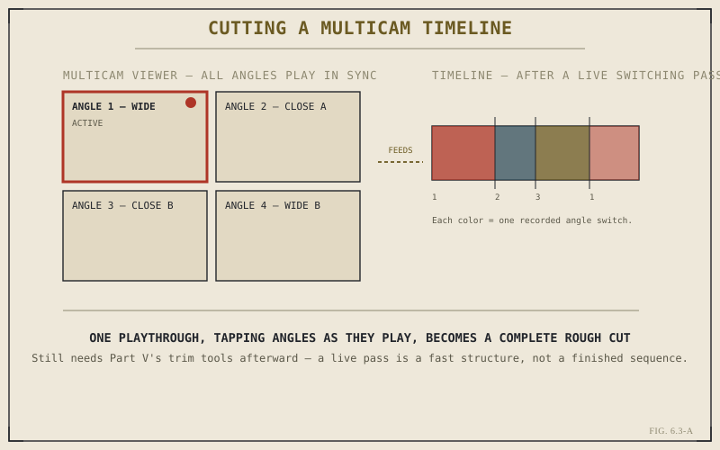

Chapter 6.1 promised something closer to directing than to conventional editing. Chapter 6.2 built the object that makes it possible: a single multicam clip, angles aligned and bundled. This chapter is where that promise actually gets kept — placing the clip on a timeline, opening its dedicated viewer, and cutting between angles live, in real time, rather than through the placement-and-trim cycle every earlier part of this book has relied on.
Placing a Multicam Clip on the Timeline
A multicam clip goes onto the Edit page timeline exactly the way any other clip does — dragged from the Media Pool, placed with any of Chapter 4.4's basic editing actions, trimmed with any of Part V's tools. Nothing about the timeline itself needs to know or care that this particular bar represents several synced angles rather than one source. That ordinariness is deliberate: everything you already know about placing and trimming clips still applies here, and Part VI is adding one new capability on top of that foundation, not replacing it.
The Multicam Viewer: Seeing Every Angle at Once
What is new is how you interact with the clip once it's active in the viewer. Rather than the single-image view every other clip type gets, a multicam clip opens in a dedicated layout showing every synced angle simultaneously, arranged in a grid, all playing back together in perfect alignment. One angle is always marked as the active one — the one currently feeding the timeline — with a visible highlight distinguishing it from the rest of the grid.

Every angle plays at once; the highlighted one is what's actually being recorded to the timeline.
Switching Angles During Playback
The actual cutting happens by changing which angle is active while the clip plays. A number key mapped to each angle position, or a direct click on a tile in the viewer grid, switches the active angle instantly — and if this happens while the clip is playing, Resolve records that switch as a real edit point on the timeline at the exact frame it occurred, without pausing playback to do it. Watching a full multicam clip through once, tapping a different number each time your attention wants a different angle, produces a rough but complete cut of the entire clip in roughly the time it takes to watch it — a categorically different pace than placing and trimming each cut individually.
Watching the material and choosing angles as it plays isn't a shortcut version of editing — it's a different way of making the same decision, closer to how a live broadcast director works than to how a timeline gets built one edit point at a time.
Cutting Paused, When Precision Matters More Than Speed
Live switching during playback isn't the only option, and it isn't always the right one. The same angle-switching controls work with the clip paused, letting you place a cut at a specific, deliberately chosen frame rather than wherever your reaction landed during playback. In practice, most editors move between both modes within the same sequence: a live pass to build the overall structure quickly, then paused, frame-accurate switches at the handful of moments — a reaction, a specific line, a beat that needs to land exactly right — where precision matters more than pace.
A Live Cut Is a Rough Cut, Not a Finished One
It's worth being honest about what a live multicam pass actually produces: a fast, complete first structure, not a finished sequence. The cuts a live pass generates land wherever a keypress happened to fall, and they benefit from exactly the same refinement Part V spent seven chapters building — JKL-based review, ripple and roll trims, Match Frame, Dynamic Trim. Multicam editing doesn't replace trimming skill; it gives trimming skill a fast, complete first draft to work on, which is arguably the more valuable role. Chapter 6.4 turns next to a detail this chapter has glossed over — what actually happens to each angle's audio once you start cutting between them.
Key Concepts to Remember
- A multicam clip is placed and trimmed on the timeline exactly like any other clip — placement and trimming skills carry over unchanged.
- The multicam viewer shows every synced angle at once, with the active one highlighted as what's currently feeding the timeline.
- Switching angles during playback records real edit points automatically — a full pass can produce a complete rough cut in one watch-through.
- A live cut is a fast rough structure, not a finished sequence — Part V's trim tools still do the refinement work afterward.
Cross-References Forward
| → Ch. 6.4 | Multicam Audio Strategy — what happens to each angle's audio once you start cutting between them. |
| → Ch. 5.6 | Revisit Dynamic Trim Mode, one of the tools that refines a live multicam pass into a finished cut. |
| → Ch. 6.2 | Revisit how the multicam clip itself is built, before it reaches the timeline this chapter cuts on. |